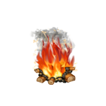

Получено: файл; исходный URL. Оригинальные байты с указанного зеркала; идентичность архивному файлу не проверена.
Огонь
Мой Мир; историческая таблица, дата редакции не установлена- Тип
- нет данных
- Покупка
- 1 Зб; место покупки не указано
- Продажа
- 1000 монет
- Как получить
- Изготовить в Вожде Собрать Коллекцию Анти-зомби
- Применение
- Участвует в строительстве: Цветник Нефтяная вышка Особняк Белый дом др.
- Особенности
- нет данных
- Версия и дата
- Мой Мир; историческая таблица, дата редакции не установлена


Данные по источнику · Мой Мир · 20.06.2011
Предварительно: один источник; требует сверки. Требуется сверка.
- Цена продажи
- 1 000 монет.
- Источники
- Изготовление в Вожде; обмен коллекции анти-зомби.
- Применение
- Цветник, нефтяная вышка, особняк, белый дом и другие постройки.
Данные по источнику · ВКонтакте, ZOMBIA · 28 Июня 2011, 15:09; дата редакции не установлена
Предварительно: Данные одной исторической фанатской страницы; цифры и подписи изображений требуют сверки. Описание и условия сохранены по колонкам без додумывания.. Требуется сверка.
- Описание материала
- [изображение: Огонь, зомби ферма, зомби мания] Огонь 1000 монет 1 Зомбакс
- Участвует в строительстве
- нет текстовых данных; возможны неподписанные изображения
- Как достать
- Произвести в Цветике Произвести в Вожде Выиграть в рулетку или Получить за Коллекцию Анти-Зомби
- Участвует в создании
- [изображение: Лист золота]
Данные по источнику · браузерная версия; платформа не указана · дата редакции неизвестна
Предварительно: Подписи и последовательность пиктограмм перенесены без автоматического толкования. Названия, цены и направления стрелок требуют визуальной сверки; возможны ошибки самого сайта.. Требуется сверка.
- Колонка 1 в порядке пиктограмм
- [подпись: Огонь; файл ogon.png] [подпись: Стоимость (Зомбаксов); файл zombucks.png] 1 [подпись: Продажа; файл moneta.png] 1000
- Колонка 2 в порядке пиктограмм
- [значок: proizvoditsya.png] [подпись: Цветик; файл cvetik.png] [подпись: Вождь; файл vogd.png]
- Колонка 3 в порядке пиктограмм
- [значок: stroit.png] [подпись: Цветик; файл cvetik.png] [подпись: Нефтяная Вышка; файл neftyanaya_vyshka.png] [подпись: Особняк; файл osobnyak.png] [подпись: Белый Дом; файл beliy_dom.png] [подпись: Ракета; файл raketa.png] [подпись: Японский храм; файл yaponsky@20hram.png] [подпись: Пирамида Майя; файл pyramida_maya.png]
- Колонка 4 в порядке пиктограмм
- [значок: sosdanie.png] [подпись: Любовь; файл lybov.png] [значок: strelka.png] [подпись: Валентинка; файл valentinka.png] [подпись: Вода; файл voda.png] [значок: strelka.png] [подпись: Бассейн; файл basseyn.png]
- Колонка 5 в порядке пиктограмм
- [значок: bonus.png] [подпись: Флаг Белоруси; файл flag_belorusy.png] [подпись: Флаг России; файл flag_rossii.png] [подпись: Флаг Украины; файл flag_ukrainy.png] [значок: poluchit.png] [подпись: Коллекция Анти-зомби; файл anti-zomby.png]
Данные по источнику · браузерная Зомби Ферма / Зомби Мания; платформа требует проверки · дата URL не гарантирует дату редакции
Предварительно: Индивидуальная страница прочитана автоматически, подписи значков могут содержать ошибки; даты редакции и независимость от ЗомбиСити не установлены.. Требуется сверка.
- Основной блок страницы и подписи изображений
- Материал [иллюстрация: Огонь] Огонь Цена покупки: 1 [иллюстрация: Зомбаксы] Цена продажи: 1000 [иллюстрация: Монеты] Продать или купить Огонь можно в Обменке Зомби Фермы Популярный материал игры Зомби Ферма можно добыть разными способами. Его можно получить за обмен коллекции, найти в чемодане туристов, выиграть в рулетке, создать в специальных постройках. Огонь часто применяется в строительстве. Огонь дается за обмен коллекции: Анти-зомби [иллюстрация: Коллекция Анти-зомби] Огонь можно найти в сокровищах: Чемодан [иллюстрация: Чемодан туриста] Икебана [иллюстрация: Икебана] Огонь создается в постройках: Огонь [иллюстрация: Огонь] = 5 Любовь [иллюстрация: Любовь] + 10 Чеснок [иллюстрация: Чеснок] Цветик [иллюстрация: Цветик] Огонь [иллюстрация: Огонь] = 1 Любовь [иллюстрация: Любовь] + 1 Железное сердце [иллюстрация: Железное сердце] [иллюстрация: Стрелка] Вождь [иллюстрация: Вождь] Огонь [иллюстрация: Огонь] = 3 Дрова [иллюстрация: Дрова] + 5 Белая рука [иллюстрация: Белая рука] [иллюстрация: Стрелка] Стоунхендж [иллюстрация: Стоунхендж] Огонь участвует в создании материалов: 5 Капля воды [иллюстрация: Капля воды] = 5 Снежок [иллюстрация: Снежок] + 1 Огонь [иллюстрация: Огонь] [иллюстрация: Стрелка] Альпийский дом [иллюстрация: Альпийский дом] 5 Кирпичи [иллюстрация: Кирпичи] = 15 Цемент [иллюстрация: Цемент] + 3 Огонь [иллюстрация: Огонь] [иллюстрация: Стрелка] Сфинкс [иллюстрация: Сфинкс] 15 Любовь [иллюстрация: Любовь] = 5 Синее сердце [иллюстрация: Синее сердце] + 1 Огонь [иллюстрация: Огонь] [иллюстрация: Стрелка] Валентинка [иллюстрация: Валентинка] Стеклянная труба [иллюстрация: Стеклянная труба] = 5 Стекло [иллюстрация: Стекло] + 1 Огонь [иллюстрация: Огонь] [иллюстрация: Стрелка] АЭС [иллюстрация: АЭС] Вода [иллюстрация: Вода] = 1 Снежок [иллюстрация: Снежок] + 1 Огонь [иллюстрация: Огонь] [иллюстрация: Стрелка] Бассейн [иллюстрация: Бассейн] Пенопласт [иллюстрация: Пенопласт] = 1 Вата [иллюстрация: Вата] + 1 Огонь [иллюстрация: Огонь] [иллюстрация: Стрелка] Эйфелевая [иллюстрация: Эйфелевая башня] Резина [иллюстрация: Резина] = 1 Супер-клей [иллюстрация: Супер-клей] + 1 Огонь [иллюстрация: Огонь] [иллюстрация: Стрелка] Бизнес-Центр [иллюстрация: Бизнес-Центр] 1 Искра [иллюстрация: Искра] 7 Порох [иллюстрация: Порох] 15 Огонь [иллюстрация: Огонь] Повара [иллюстрация: Повара] Огонь участвует в строительстве зданий: Идол огня [иллюстрация: Идол огня] Цветик [иллюстрация: Цветик] Нефтяная вышка [иллюстрация: Нефтяная вышка] Особняк [иллюстрация: Особняк] Белый дом [иллюстрация: Белый дом] Ракета [иллюстрация: Ракета] Японский храм [иллюстрация: Японский храм] Флаг Милана [иллюстрация: Флаг Милана] Сигнальный костёр [иллюстрация: Сигнальный костёр] Авто [иллюстрация: Авто] Стальное яйцо [иллюстрация: Стальное яйцо] Драконье яйцо [иллюстрация: Драконье яйцо] Терем [иллюстрация: Терем] Лестница в небо [иллюстрация: Лестница в небо] Пирамида Майя [иллюстрация: Пирамида Майя] Огонь можно выиграть в рулетках: Флаг Беларуси [иллюстрация: Флаг Беларуси] Флаг Украины [иллюстрация: Флаг Украины] Флаг России [иллюстрация: Флаг России] Карапуз рулетка [иллюстрация: Карапуз] Огонь можно найти при колдовании Палочками: Палочка-выручалочка [иллюстрация: Палочка-выручалочка] [иллюстрация: Стрелка] Бронзовый кубок [иллюстрация: Бронзовый кубок] Серебряный кубок [иллюстрация: Серебряный кубок] Золотой кубок [иллюстрация: Золотой кубок] Бермудский Портал [иллюстрация: Портал] Золотая бутса [иллюстрация: Золотая бутса]
Текст источника без реконструкции
Изготовить в Вожде Собрать Коллекцию Анти-зомби Участвует в строительстве: Цветник Нефтяная вышка Особняк Белый дом др.
Связанные сущности
нет проверенных связей — требуется сверка.